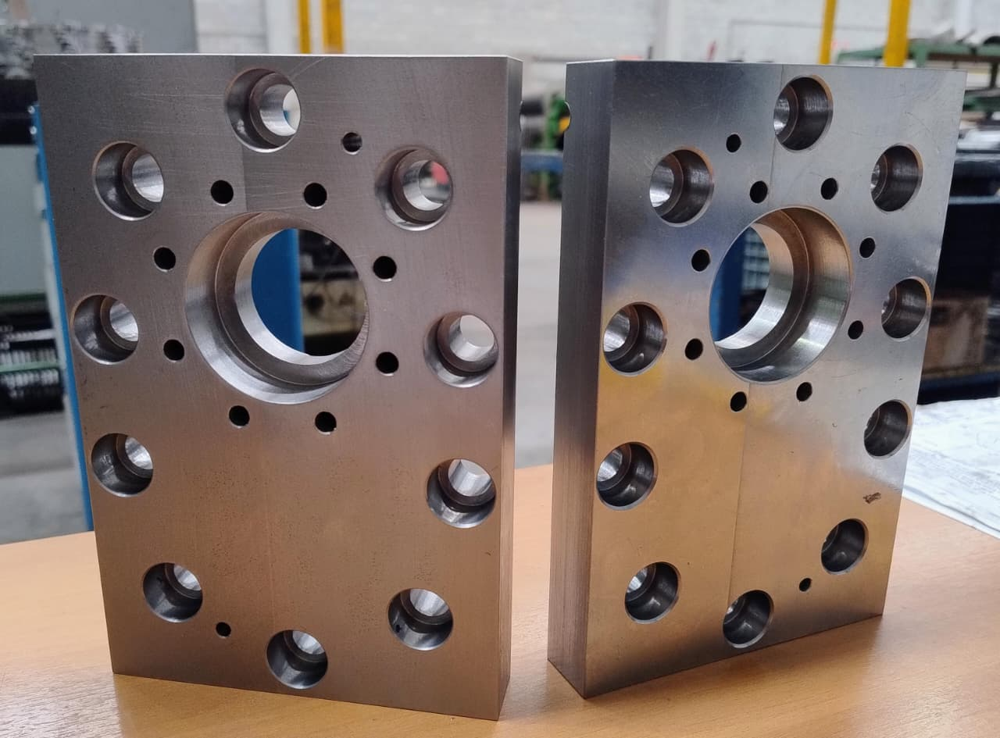
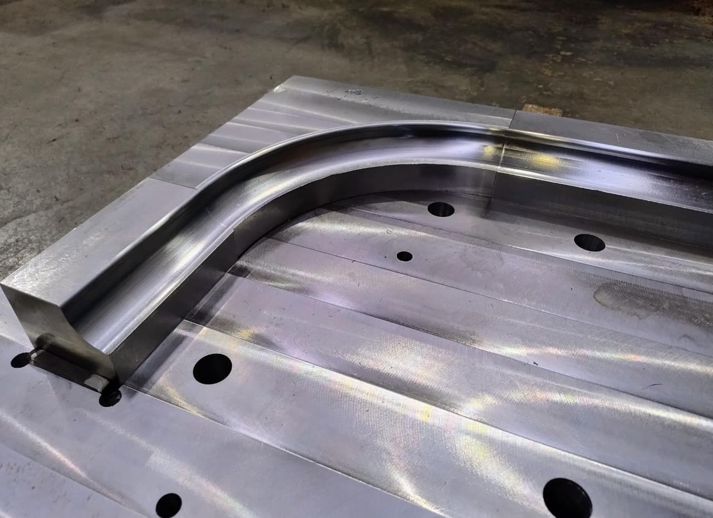
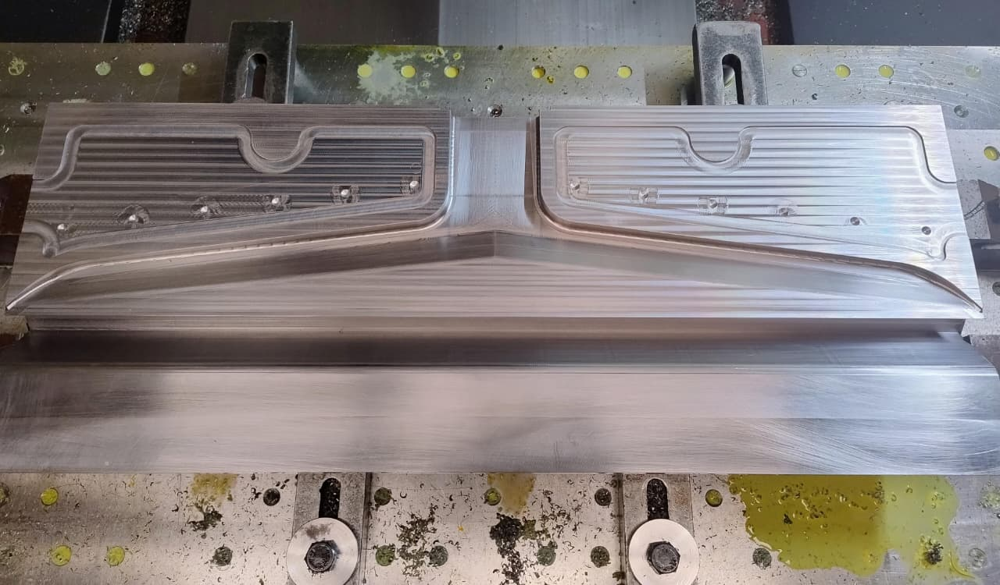
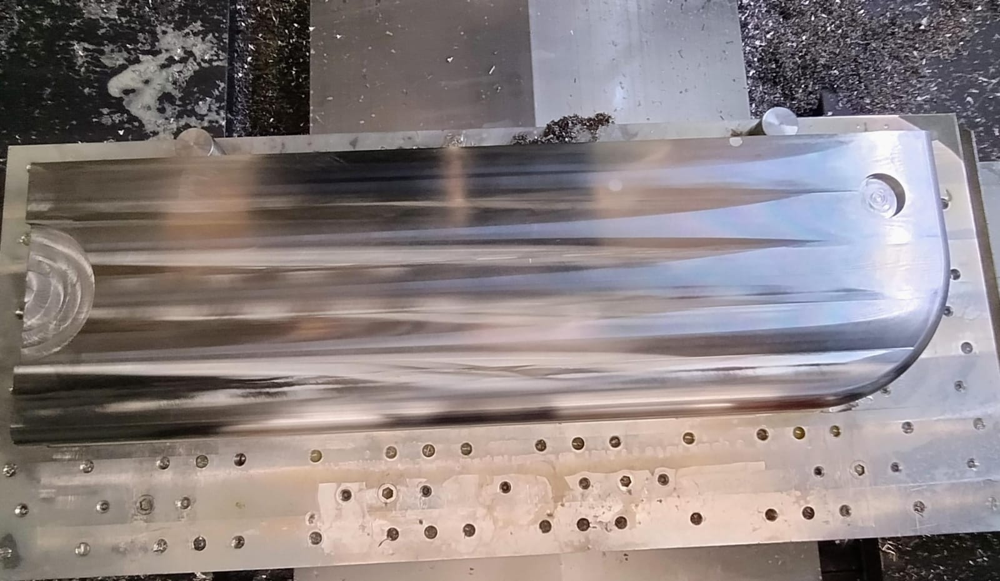

Controle de Qualidade & Metrologia
Na RamaTex, a precisão não é apenas um detalhe, é o nosso compromisso. Contamos com um laboratório de metrologia equipado e processos rigorosos de inspeção para garantir que cada peça atenda 100% às especificações do seu desenho técnico.

Conformidade Total com o Desenho Técnico

Controle de Medição Preciso

Compromisso com a Entrega no Prazo

Garantia de Perfeito Acabamento
Possui um projeto com tolerâncias rígidas?
Nossa equipe de engenharia e usinagem está pronta para analisar seu desenho técnico ou amostra e garantir a execução exata.
Enviar Desenho Técnico